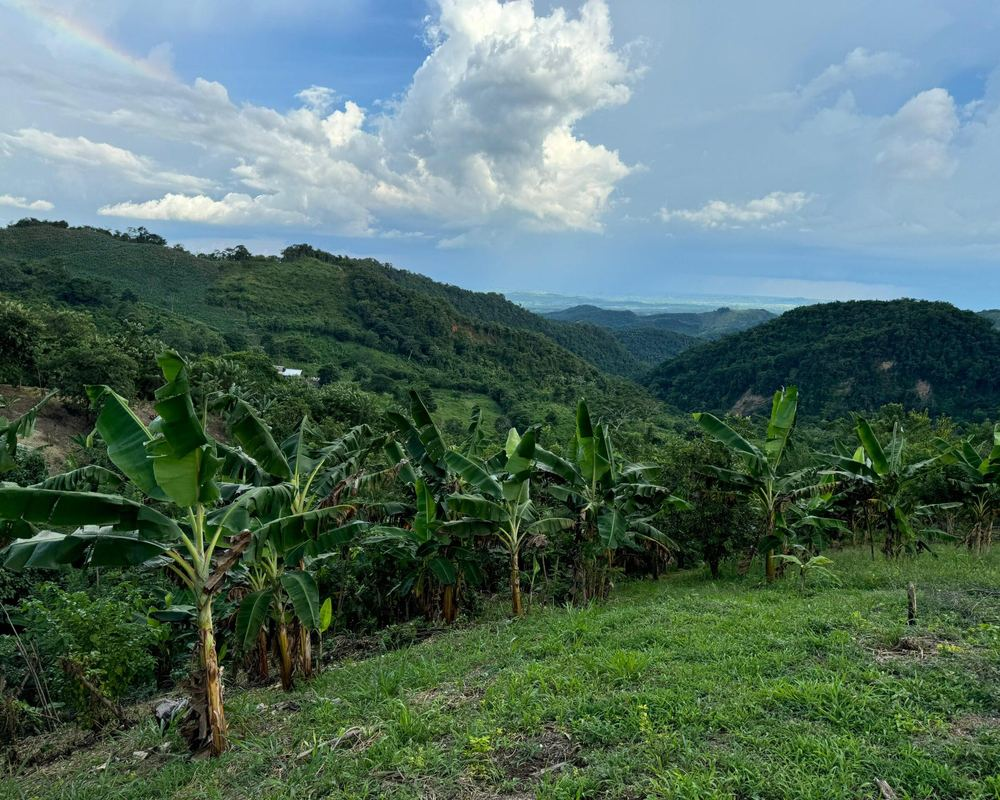

Desde la finca
Quien produce en las veredas de Sahagún suele venderle a quien pasa a recoger la cosecha. Ese comprador pone el precio, y el productor muchas veces no tiene a quién más ofrecerle.
Fincux nació de una idea sencilla: que quien produce en el campo de Sahagún y quien necesita esos productos puedan encontrarse y hablar directamente.
Aquí los productores muestran lo que tienen, con su foto, su precio y su nombre, y los negocios de la zona pueden consultarles. El trato lo hacen entre ellos.

Quien produce en las veredas de Sahagún suele venderle a quien pasa a recoger la cosecha. Ese comprador pone el precio, y el productor muchas veces no tiene a quién más ofrecerle.
Una tienda, una quesera o un restaurante necesita yuca, leche o carne cada semana, y no siempre sabe quién la produce a pocos kilómetros.
Muestra lo que produce cada finca, con foto, precio y cantidad, y deja que el comprador le escriba al productor para preguntar.
No recibe pagos, no hace entregas y no pone precios. Eso lo acuerdan el productor y el comprador.
Para quien cultiva o cría en Sahagún y sus veredas y quiere que más gente conozca lo que produce.
Para tiendas, restaurantes, queseras y panaderías que prefieren comprar cerca y saber a quién le compran.